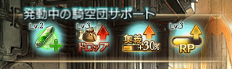
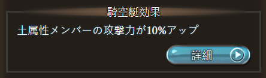
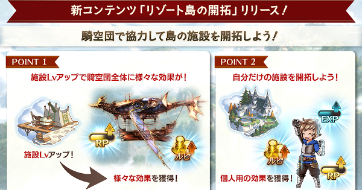
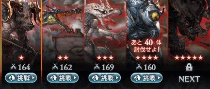
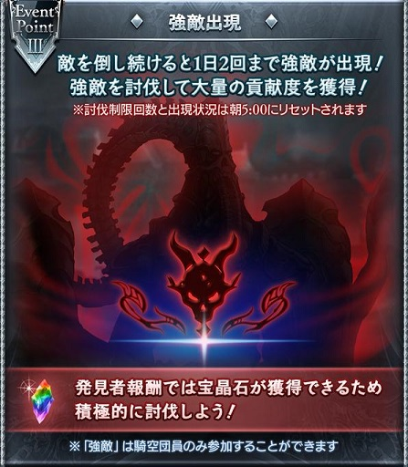
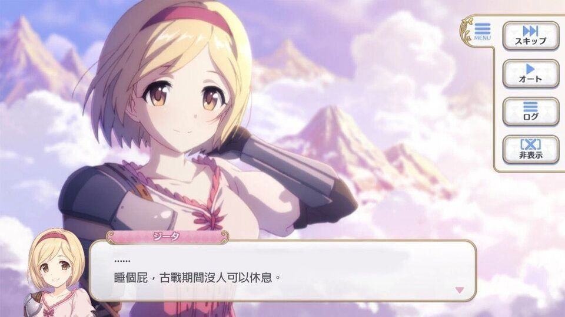
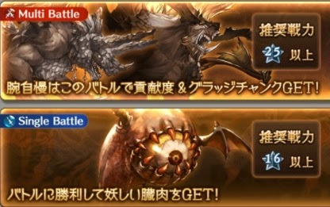
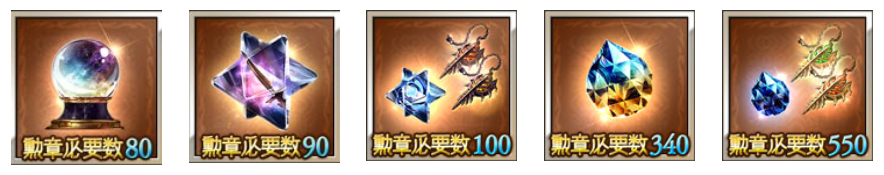

決戰！星之古戰場
公會戰
是GBF中最重要的兩個活動，提到公會戰就得先說GBF中的騎空團了。
騎空團
劇情中，"騎空士"指的是使用騎空艇探索世界的冒險者，而"騎空團"則是騎空士們結成的團體。
遊戲中，騎空團就是指玩家們所組成的公會了，加入騎空團後玩家可在戰鬥中獲得許多增益效果。
一般而言並不建議自己創立騎空團，因為需要花費資源來養騎空團，去尋找現有符合自己目標的騎空團才是上策。
騎空團主要的作用
1.騎空團Buff
騎空團能為團員提供的額外增益效果，如增加攻擊力、戰鬥開始時獲得額外奧義、戰鬥開始時獲得回復道具等。
 2.AT時間
由騎空團的團長或副團長設定。AT時間每日發動兩次，每次持續一小時。
一般而言大部分的騎空團都會將時間設定在晚上的9點至11點。

3.島開拓
目前可以經由提供道具來增加一些加成和每日獲得一些素材外暫時沒有其他用途。
4.公會戰
這邊也是騎空團最重要的用途，提高古戰場以及小古戰的獎勵效益。
小古戰
活動正式的名稱應該是"ドレットバラージュ"，不過都俗稱為小古戰。
與古戰場類似一樣是騎空團積分活動，但是沒有對手，單純的累積團內分數目標(全團總分45億，個人分數1.4億)來獲取獎勵。
遊玩方式
分為5個難度，團內討伐至規定數量後會自動開放下個難度，4與5星需等活動中期開放。
強敵出現
每日討伐一定數量後會出現的難度(團內救援限定)，一天只會出現兩次，通關後可獲取大量的貢獻點數以及100~200寶晶石(根據強敵等級)
獎勵報酬
1.勳章
每次活動總共可獲得240勳章
2.討伐手形
每次活動總共可獲得20個討伐手形，用途是兌換天星器
3.討伐章
和平常的討伐章一樣，達到即可獲得獎勵
4.騎空團貢獻度
貢獻度分為個人及團體，一樣達到目標即可獲得獎勵

古戰場
作為本遊戲中最重要的活動，在此活動中可以獲得遊戲中的各種重要的資源。
此活動簡單說就是與其他騎空團互相對抗的活動。
活動流程
預選2日->休息1日->本戰4日->特別戰1日
1.預選2日
活動開始下午6點至隔天的晚上11點，結算騎空團排名後為進入本戰的騎空團分出ABC三個大組。
2.休息1日
雖然說是休息日，不過大概都是在刷肉不會休息XD
3.本戰4日
從早上6點開始至晚上11點結束，每一日系統會分配一個對手騎空團和玩家的騎空團對抗，最後比較兩邊的貢獻度，勝利的一方會有比較多的獎勵(主要是勝利方勳章會多一點)。
4.特別戰1日
活動最後一天早上6點會出根據活動幾天下來的騎空團排名區間給予不同難度的一只BOSS，獎勵也有不同。團內打完一次即可領獎。
活動目標
主要就是前三日打這兩種關卡刷肉(本戰關卡的門票)，本戰打最適當能打的關卡來獲取貢獻度
古戰場獎勵
1.戰貨
抽戰貨之前系統會要你選擇一把天星器或其他東西為戰貨箱的大獎，除此外和平常的戰貨系統沒有什麼不同。
前4箱一樣建議全部抽完不要重置。
天星器主要的用途是作為十天人的製作武器，在十天人製作會再詳細說明。
2.勳章
根據個人以及騎空團的貢獻程度可以獲得不同數量的勳章作為獎勵，影響能拿到多少勳章的層面很廣。
勳章可在勳章兌換商店兌換平常難以取得的重要道具。
勳章兌換相關
每次古戰場都會刷新一次勳章商店。而勳章要換什麼是根據自己的目標來做安排的，並不是說換什麼一定好，所以不是說這次沒換到商店刷新了這樣很虧。
如果新人真不知道換什麼的話，就先換玉髓(製作賢者用)吧。
其次是金剛晶，因為真的挺缺召喚石突破道具的XDD，召喚石要用抽滿的實在很難。
緋緋金的部分以製作天人或是突破終末神器的進度來兌換就好，不太需要屯金。
至於特殊武器的突破道具，新人覺得素材很麻煩，真想兌換的話
除了終末神器5突道具(最右邊那個)以外均不推薦兌換！
藍紙的部分是天人超越限界的道具，這個和新人沒關係，不用理會。
其他的東西都當作不存在。